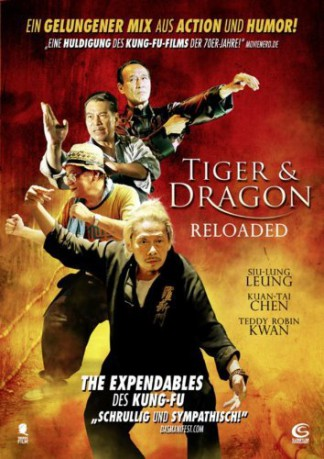

#3645 Tiger & Dragon Reloaded
Alternativ: Gallants (Englischer Titel)
 
 IMDB-Wertung: 6.6 / 10
IMDB-Wertung: 6.6 / 10  Metascore: 0
Metascore: 0 
Cheung (You-Nam Wong) ist ein Loser. Alles, was der schüchterne Bürohengst anpackt, geht schief, und deswegen versetzt ihn sein Chef nur zu gern in ein kleines Städtchen am Arsch der Welt. Kaum angekommen, steckt der Pechpilz schon wieder bis zum Hals im Schlamassel. Da tritt als überraschender Retter ein rüstiger Mittsechziger namens Tiger (Siu-Lung Leung) auf den Plan: Der einstige Lehrling eines großen Meisters, der seit dreißig Jahren im Koma liegt, hofft unbeirrt auf die Genesung seines Herrn– ebenso wie sein ebenso alter Kumpel Dragon (Kuan Tai Chen). Vorerst haben die beiden jedoch seine früher legendäre Kampfschule zu einem hübschen Teerestaurant umfunktioniert. Natürlich passiert, was passieren muss: Das vergreiste Oberhaupt erwacht aus dem Koma, Cheung sorgt weiter für Ärger, und zu allem Überfluss fordert ein konkurrierender Sportclub die aus der Form gekommene Truppe zu einem Match heraus. Jetzt müssen die Kung-Fu-Opis zeigen, was in ihnen steckt…
Jahr: 2010
Dauer: 96 Minuten
FSK: 16
Land: Hong-Kong Studio: Sunfilm EntertainmentTonspuren:
Untertitel: Deutsch,
Auflösung: 1080p (1920x816) Größe: 8960 MB
Genre: Action, Drama, Komödie
Regisseur: Clement Sze-Kit Cheng, Chi-kin Kwok
Drehbuch: Marshall Houts
Soundtrack:
Darsteller:
- Siu-Lung Leung als Tiger
- Teddy Robin Kwan als Master Ben Law
- Jin Au-Yeung als Mang
 Kuan Tai Chen als Dragon
Kuan Tai Chen als Dragon- You-Nam Wong als Cheung
- J.J. Jia als Kwai
- Haitao Li als Pon Ka-kwun
- Wing-cheong Law als Bronze Rooster
- Susan Yam-Yam Shaw als Fun
- Wai-Man Chan als Master Pong
 Meng Lo als Jade Kirin
Meng Lo als Jade Kirin- Kuan-Chung Ku als Officer Fei Yeung
- Min-Leung Chan als Golden Swallow
- Oscar Ka Li als Ching's student
- Bing-Man Tam als Narrator
- Elaine Kin Yi Tsang als Boxing Hall Girl
Datei: X:\HD-Eastern-Collections\Tiger and Dragon\Tiger & Dragon Reloaded (2010, FSK16, 1920x816).mkv seit 12.05.2016
Festplatte: HD Eastern+Western
 Es gibt insgesamt 7 Filme in der Gruppe 'HD-Eastern-Collections\Tiger and Dragon'
Es gibt insgesamt 7 Filme in der Gruppe 'HD-Eastern-Collections\Tiger and Dragon'